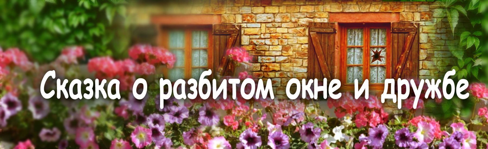
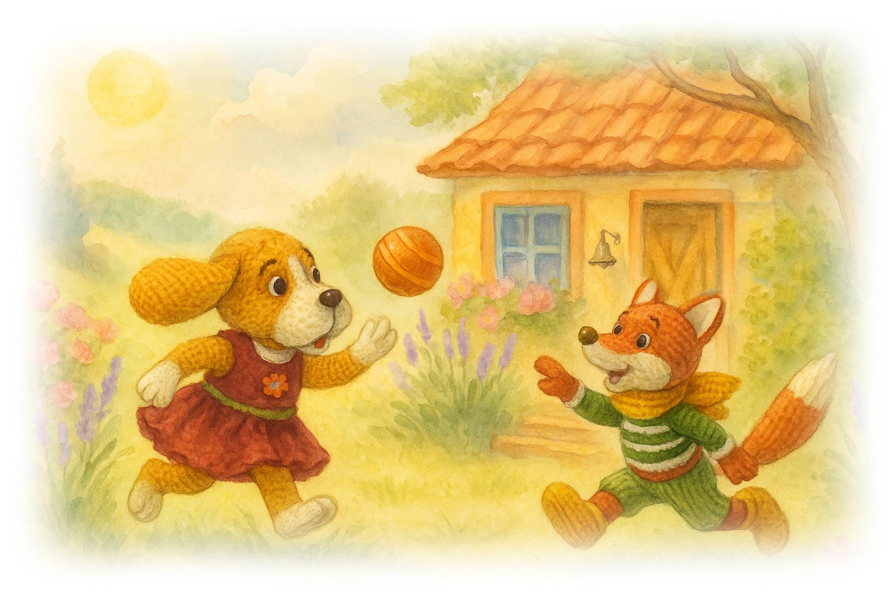
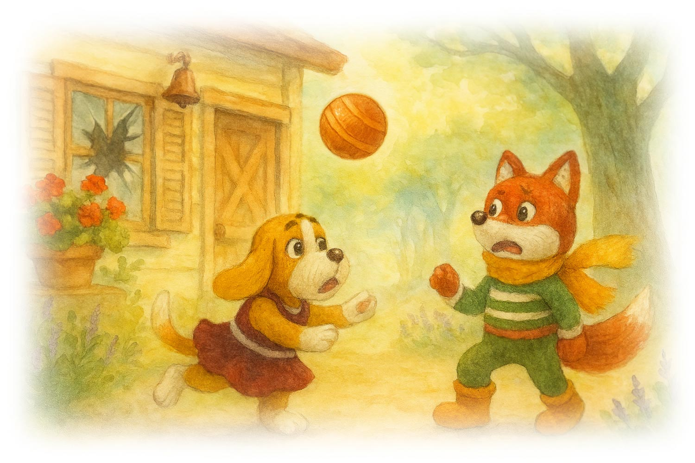
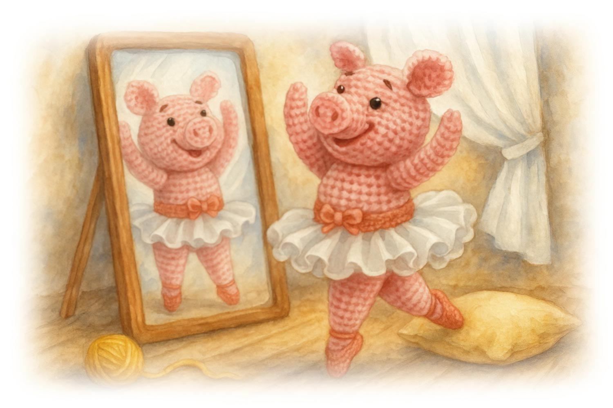
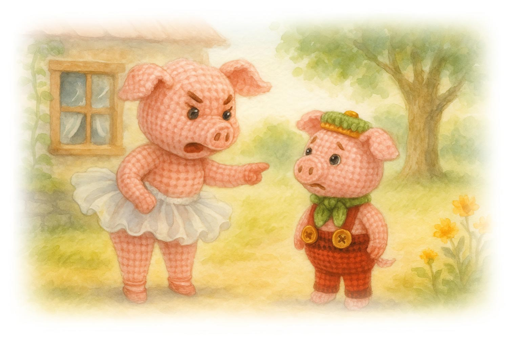
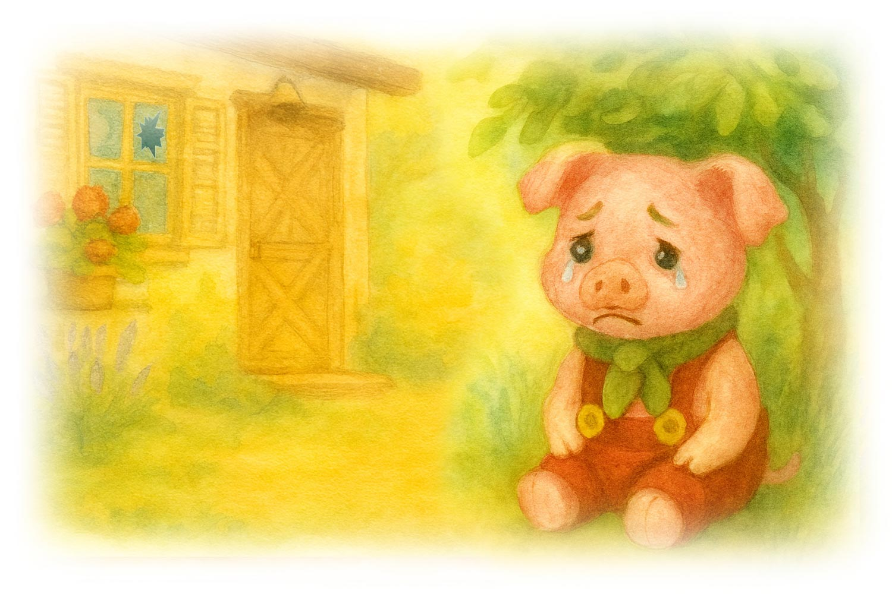
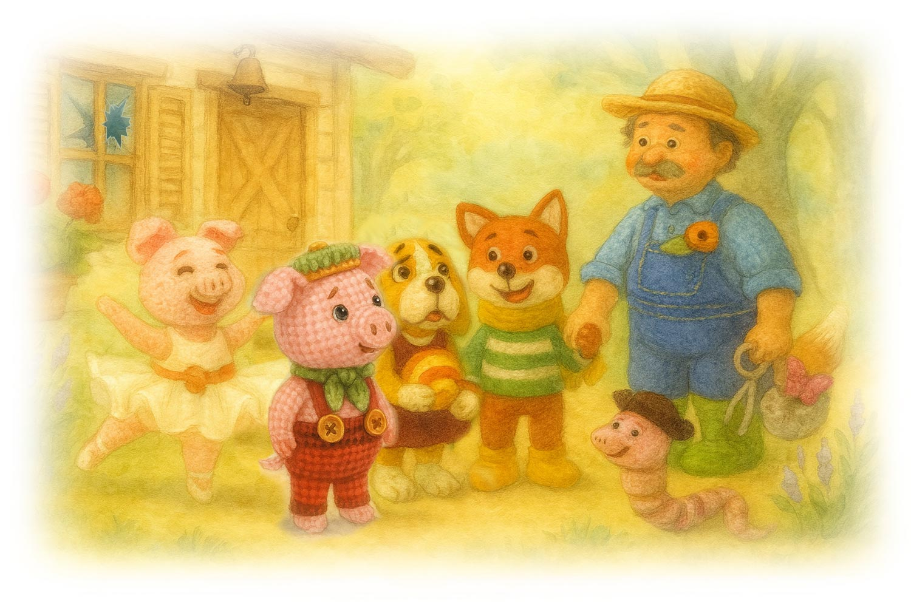

Сказки кота Филомура
бережно записанные его давним поклонником — крысом Мышелем

🐾 Сказка о разбитом окне и дружбе
Глава 1 | Глава 2 | Глава 3 | Глава 4 | Глава 5
Глава 1. Озорной мячик
На солнечном пригорке, окружённом геранями, лавандой и старыми ясенями, стояла фермерская сторожка с деревянными ставнями и звонким колокольчиком у двери. Здесь жил дядя Лёша — работник фермы и мастер на все руки — вместе со своей женой, тётей Полей, заботливой хозяйкой и помощницей.
Любимицей фермы была собачка Пиппа. Рыжая, с белыми и чёрными пятнами, длинноухая и безмерно дружелюбная, она встречала всех радостным лаем и попыткой лизнуть прямо в нос.
Её лучший друг — рыжий лисёнок Лиуми, ловкач и выдумщик. Вместе они часами гоняли мячик по пыльной тропинке возле дома дяди Лёши.
— Лови, Лиуми! — тявкала Пиппа, отпрыгивая в сторону.
— А мой мячик сегодня быстрее тебя! — смеялся Лиуми, подбрасывая его хвостом.
Они бегали без устали, пока мячик вдруг не угодил в окно.
Звонкое «дзынь!» — и стекло разлетелось на мелкие осколки.
Повисла тишина — непривычная, тревожная.
— Ой… смотри… окно… Как это случилось? — выдохнула Пиппа.
— Что теперь будет?.. — прошептал Лиуми.
— Это сделал наш мячик… — задумчиво сказал он, будто пытаясь найти объяснение страшной случайности.

Они замерли, испуганно глядя на разбитое стекло. Вокруг не было ни души. Не зная, что делать, они подняли мячик и убежали. Да, они знали, что разбить окно — плохо. Но ведь это было нечаянно. Ни Пиппа, ни Лиуми не хотели беды. Даже понять толком, как это произошло, они не успели.
Веселье исчезло. Настроение потускнело. Они побрели подальше от сторожки и тихо сели под старым дубом. Играть больше не хотелось.
Молча, палочкой, они рисовали на земле странные, никому не понятные знаки — будто пытались хоть как-то выплеснуть тревогу.
Так, с одного разбитого окна, началась история о том, как маленькая случайность может привести к трудному выбору — и как важно быть честным, даже если очень страшно.
В начало страницы
Глава 2. Знакомьтесь: свинка-балеринка Марфуша
На ферме, где каждое утро начиналось с весёлого кукареканья петуха и ароматом свежескошенного сена, жили не только озорные зверята.
В самом центре двора, в аккуратном розовом свинарнике с белыми занавесками, жила свинка по имени Марфуша. Но не спешите думать, что она была обычной свинкой! О нет — Марфуша была настоящей свинкой-балеринкой!
Она танцевала так, будто всё вокруг становилось сценой:
— «Тра-та-та-та, плие-е-е, та-та-та-та-тааа — хрю-хрю!» — напевала она, кружась по деревянному полу в настоящих балетных тапочках и пышной юбочке, которую сама сшила из белой ленточки.
Пуанты тихонько поскрипывали, а белая юбочка мягко колыхалась вокруг неё, пока она грациозно вращалась перед большим зеркалом. Её движения были не лёгкими — а уверенными, яркими, наполненными внутренним огнём, который делал их по-настоящему красивыми.
Рядом сидел Петя — её добрый и застенчивый поросёнок — и тихонько катал туда-сюда маленький мячик, свёрнутый из клубочка пряжи. Это был подарок от совы Софии. Он мягко покачивался из стороны в сторону, будто в такт едва слышной музыке, стараясь не мешать — ведь мама была поглощена великим искусством танца.
— Мамочка, ты опять танцуешь «Лебединое болото»? — тихо спросил он.
— Болото? Это «Лебединое озеро», мой дорогой! — изящно подпрыгнула Марфуша…
…и плюхнулась прямо на подушку, которую предусмотрительно положила заранее.
— Как забавно! — хихикнул Петя.
Марфуша мечтала танцевать в дуэте. Когда-то она выступала с бараном Андреем. Но во время па-де-де Андрей попытался поднять Марфушу — и не удержал. Она с грохотом упала, чуть не раздавила Андрея и едва не проломила пол на сцене. С тех пор Андрей предпочитает танцевать с более изящными партнёршами…
А Марфуша — вовсе не растерялась. Она сказала: «Ну и что? Я — солистка. Я и сама справлюсь!» И с тех пор исполняет свои любимые сольные партии — смело, артистично и с блеском в глазах.
Марфуша поправила бантик, отдышалась и спросила:
— Тебе нравится, мой милый сыночек? Красиво, правда?
— Да, мамочка. Очень красиво! — улыбнулся Петя.
Он очень гордился своей мамой — такой необычной, смелой и всегда настоящей.
Но всего через несколько минут… его улыбка исчезла.
В начало страницы
🐷 Глава 3. Несправедливое обвинение
Тем временем дядя Лёша вернулся с рыбалки. Рыба клевала слабо, улов был скромный, и настроение у него было неважное.
И вдруг он заметил разбитое окно в своей сторожке. Лёша подскочил, нахмурился и громко закричал:
— Что за безобразие? Кто это сделал?
Дождевой червяк Роланд услышал крик и вылез на поверхность. Он сразу понял, что дядя Лёша крайне недоволен. Роланд не видел, кто разбил окно, но вспомнил, что недавно мимо проходил поросёнок Петя с маленьким мячиком — и сказал об этом дяде Лёше.
Не разобравшись, Лёша тут же решил, что виноват Петя. Он поспешил в свинарник к Марфуше.
— Твой сын разбил окно в моей сторожке! — сердито воскликнул он. — Лучше бы ты занялась воспитанием, а не вертелась перед зеркалом с утра до вечера, задирая копытца!
Марфуша, огорчённая и обиженная, позвала Петю.
— Петя? Ты разбил окно? — строго спросила она, всплеснув копытцами.
— Я?.. Н-нет… Я ничего не разбивал, — пропищал поросёнок, испугавшись.
— А червяк Роланд видел, как ты проходил мимо с мячиком, — строго сказал дядя Лёша.
— Но я… — Петя попытался объяснить, но его никто не слушал.
— Всё ясно! — вздохнула Марфуша. — Даже не признаёшься! Нужно иметь отвагу сказать правду.
— Ты наказан: мячик — в кладовку, никаких мультиков, и на день рождения к овечке Лиле ты не пойдёшь!
— Но… мааам… — тихо возразил Петя. — Когда я проходил мимо, окно было целое. И мой мячик слишком маленький — он не мог…
Но Марфуша уже не слушала. Петя молча вышел на улицу. Он побрёл по полянке, подальше от чужих глаз, и горько заплакал в одиночестве. Ему было обидно — не столько из-за несправедливого обвинения, сколько от того, что мама ему не поверила. Подумала о нём плохо. А ведь кроме неё у него никого не было.
Друзей у Пети не было: над ним часто смеялись и дразнили «Пончиком» — за кругленький животик. Петя думал, что он не такой, как все, и что его никто не любит и не хочет с ним дружить.
Даже в балетную школу, куда Марфуша мечтала его отдать, его не приняли. Хотя, может быть, это и к лучшему. Петя совсем не горел желанием танцевать на сцене перед публикой. Он был стеснительным.
А вот играть с мячиком на полянке — это было по-настоящему радостно. Маленький мячик был его любимой и единственной игрушкой.
В начало страницы
🐾 Глава 4. Правда, которую не спрячешь
Пиппа и Лиуми попытались играть дальше… но веселье будто выветрилось. Мячик больше не радовал, лапки опустились, хвосты притихли. Они искали повод уйти — не потому что устали, а потому что внутри стало тревожно и нехорошо.
— Ой, мне нужно подмести пол в сенях, — вдруг вспомнила Пиппа.
— А я… я не сделал уроки, — тихо сказал Лиуми.
Они молча шли рядом, с поникшими головами — будто листья после дождя. И вдруг, за поворотом, увидели Петю. Он сидел один, под кустиком, и горько плакал. Слёзы стекали по его круглым щёчкам, и он даже не пытался их вытирать.
Пиппа и Лиуми остановились.
— Петенька, что случилось? Почему ты так горько плачешь? — спросила тронутая Пиппа.
Петя всё рассказал. Хотя — они и сами догадались. Его наказали. За то, чего он не делал. И тут в груди у обоих защемило. Грусть стала невыносимой, а стыд — тяжёлым, гнетущим, колючим. Они молча разошлись по домам. Но случившееся не уходило из головы. Оно сидело внутри, как заноза, и не давало покоя.
Дома Пиппа села у крыльца и подумала: «Я должна рассказать. Я не могу больше молчать». Но тут же испугалась: «А как же Лиуми? Я не могу его подвести». И тогда она решила: приму вину на себя. Скажу, что это я разбила окно. Пусть накажут меня одну. Любое наказание казалось ей легче, чем это чувство стыда за минутную слабость. И ещё — ей было очень-очень жаль Петю. Как она сможет смотреть ему в глаза?
Подойдя к избушке дяди Лёши, Пиппа вдруг увидела Лиуми. Он стоял у двери и звонил в колокольчик.
— Лиуми? — удивилась она. — Что ты здесь делаешь?
— Пиппа, послушай, ты не бойся. Я решил признаться, — сказал он спокойно. — Я расскажу дяде Лёше, что это я разбил окно. О тебе — ни слова. Пусть накажут меня.
Пиппа тихо улыбнулась.
— Нет, Лиуми. Мы расскажем вместе.
Они взялись за лапки и вошли в дом. Просто — чтобы сказать правду. Потому что нет ничего лучше правды.
Дядя Лёша уже давно перестал сердиться. К вечеру он успел вставить новое стекло, подмёл пол и даже сварил картошку.
Когда Пиппа и Лиуми рассказали, как всё было, он не поругал их. Наоборот — похвалил за честность.
— Вот это поступок! — сказал он. — За правду — всегда косточка.
Он дал каждому по сахарной косточке — с мясным ароматом и лёгкой улыбкой.
А сам поспешил к Марфуше, чтобы извиниться за опрометчивые обвинения. Конечно же, прихватив с собой подарки: большую охапку душистого сена, розовый бантик с бусинками для Марфуши и губную гармошку для Пети.
Лиуми и Пиппа пошли с ним — чтобы тоже извиниться. За свой необдуманный поступок. Чтобы сказать, как сильно они сожалеют о случившемся. И как жаль им Петю, пострадавшего из-за них.
Иногда правда приходит не сразу. Но когда она приходит — всё становится легче. Даже если окно разбито. Даже если мячик лежит в кладовке. Главное — чтобы сердце было целым.
В начало страницы
🐷 Глава 5. Сердце, которое умеет прощать
Когда Марфуша узнала правду, её глаза наполнились слезами. Она поняла, как несправедливо поступила со своим сыночком. Копытца задрожали, бантик съехал набок.
— Что же я наделала… — прошептала она.
— Как же я могла так обидеть своего маленького сыночка…
Она вспомнила его слова — и поняла, что не дала ему договорить, не поверила ему.
Не теряя ни минуты, она побежала искать Петю. Она знала, где он может быть — в своём любимом укромном местечке, за старым сеном, под кустом бузины. И действительно — там он и был. Сидел, уткнувшись носиком в коленки, и тихо всхлипывал. Маленький мячик остался в кладовке — и без него ему было ещё тоскливее.
— Петенька… — позвала его Марфуша, опускаясь рядом.
Он поднял глаза, полные слёз, и не сказал ни слова.
Марфуша обняла его, приласкала, утерла щёчки и сказала:
— Прости меня, мой милый. Я ошиблась. Я была к тебе несправедлива и очень сожалею. Я очень тебя люблю. Ты — замечательный сынок, и я горжусь тобой. А дома тебя ждут подарки… и новые друзья.
Петя не сразу поверил. Но в её голосе было столько тепла, что сердце его оттаяло. Он тихо кивнул и пошёл с мамой домой.
Марфуша первым делом достала из кладовки его любимый мячик — маленький, жёлтенький.
А ещё дома его ждал сюрприз - большая яркая книжка с картинками, которую Марфуша собиралась подарить ему на день рождения.
Пиппа и Лиуми подошли к нему, смущённые, но искренние.
— Петя, прости нас, — сказала Пиппа. — Мы не хотели, чтобы всё так вышло.
— Мы очень сожалеем, — добавил Лиуми. — И… мы хотели бы дружить с тобой.
Он порылся в карманчике, достал маленькую заводную машинку — свою самую любимую игрушку — и протянул её Пете.
— Она теперь твоя. Потому что ты — наш друг.
Петя взял машинку, прижал её к себе и улыбнулся.
— Спасибо… — прошептал он.
А дядя Лёша, слегка покашливая, подошёл с губной гармошкой.
— Я тоже виноват, Петя. Прости. Вот — подарок. И я научу тебя играть.
Он показал, как извлекать первые звуки — тихие, серебристые, как ветер в траве.
С тех пор Пиппа, Лиуми и Петя стали неразлучными друзьями. Они играли вместе, сочиняли мелодии, строили шалаши и устраивали гонки.
Никто больше не дразнил Петю. Потому что теперь у него были друзья, которые всегда его защитят. А главное — он знал, что его любят. Просто за то, что он есть.
И если вдруг кто-то разбивал окно, терял игрушку или забывал сделать уроки — они вместе находили выход. Потому что правда, дружба и прощение — это то, что делает сердце по-настоящему целым.
В начало страницы

🌟 Вопросы и задания для юного читателя
1. О чём эта глава? Перескажи историю в 3–5 предложениях.
2. Кто главный герой этой главы? Опиши его: внешность, характер и настроение.
3. Если бы ты мог задать главному герою один вопрос, каким бы он был? Запиши его — и попробуй ответить на него от имени героя.
4. Какой выбор сделал кто-то в этой главе? Согласен ли ты с ним? Что бы ты сделал иначе?
5. Найди в главе 5–10 новых слов. Запиши их, узнай их значение и составь по одному предложению с каждым словом.
6. Выбери свою любимую фразу или момент. Почему он тебе запомнился?
7. Придумай короткую дополнительную сцену, которая могла бы произойти дальше. Напиши 3–6 реплик диалога.
8. Придумай новое название для этой главы. Объясни, почему ты его выбрал.
9. Какие чувства вызвала у тебя эта глава? Выбери три слова (например: любопытство, тревога, радость, удивление) и объясни свой выбор.
10. Выбери сцену, которая запомнилась тебе больше всего. Нарисуй её и добавь маленькие детали, которые считаешь важными.